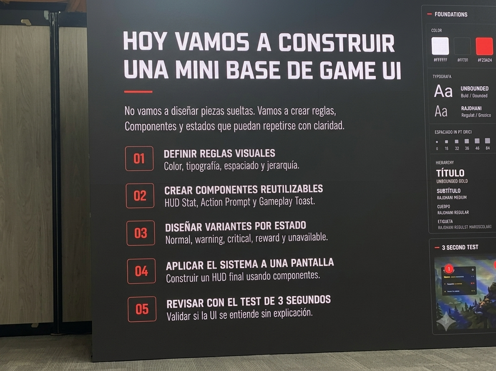
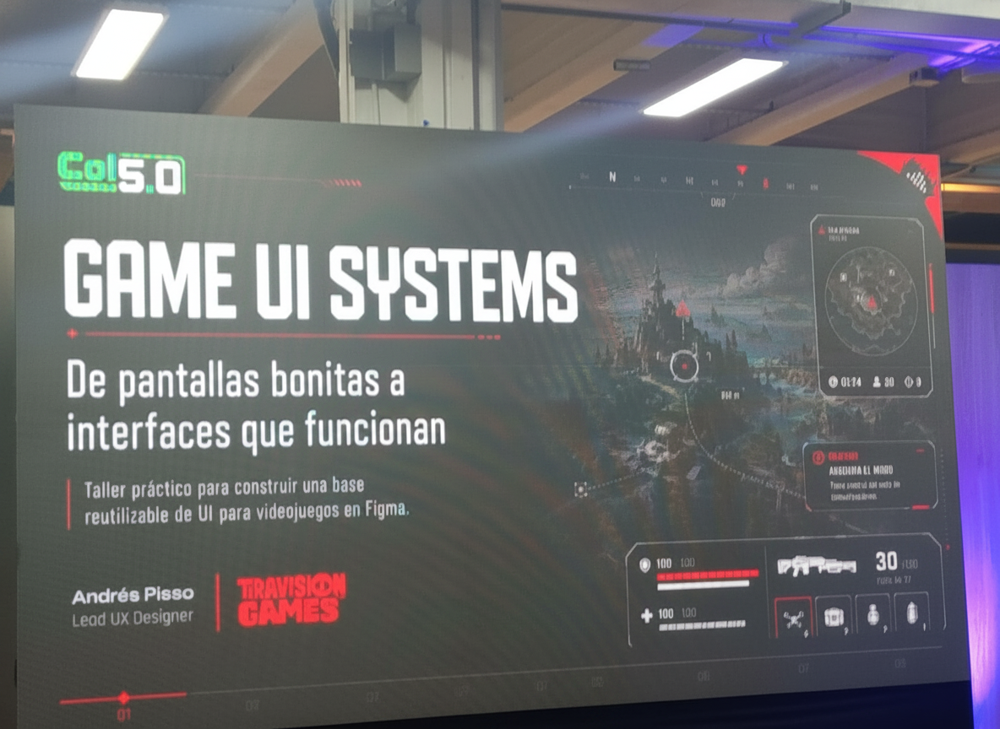
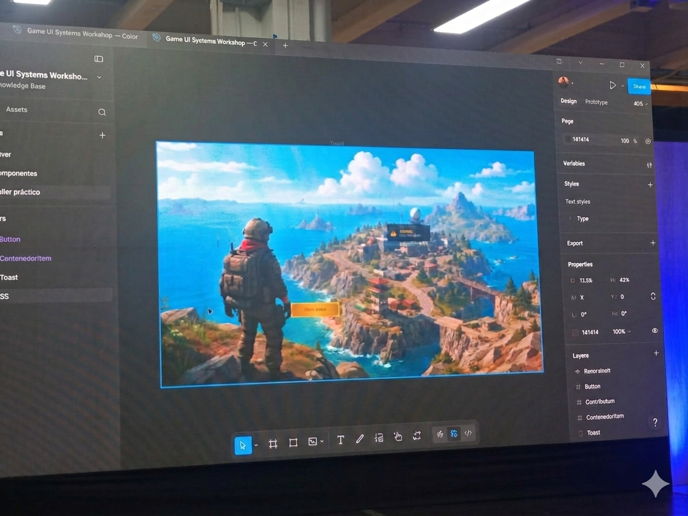
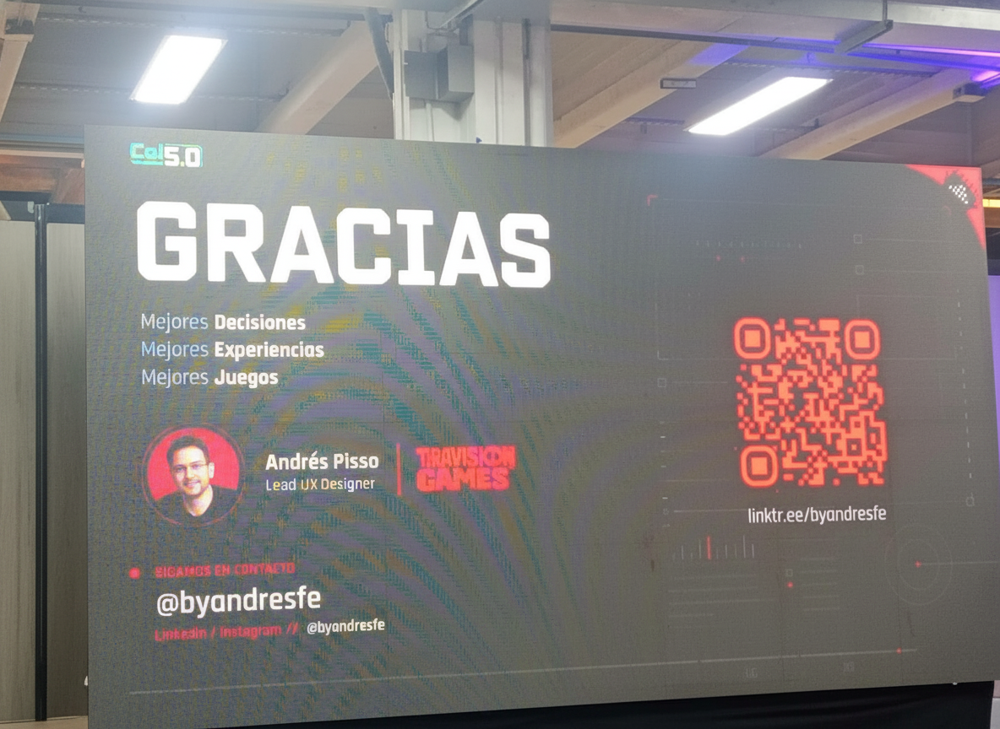

Colombia 5.0
Innovación, tecnología y transformación digital en Corferias
Innovación, tecnología y transformación digital en Corferias
| English | Español | Definición |
|---|---|---|
| Cloud Storage | Almacenamiento en la Nube | Guardado de archivos en servidores remotos accesibles por internet. |
| Deep Learning | Aprendizaje Profundo | Técnica avanzada de IA basada en redes neuronales. |
| Data Science | Ciencia de Datos | Disciplina que analiza datos para obtener conocimiento. |
| Ethical Hacking | Hacking Ético | Evaluación autorizada de sistemas para detectar vulnerabilidades. |
| Digital Identity | Identidad Digital | Información que representa a una persona en entornos digitales. |
| Smart Devices | Dispositivos Inteligentes | Equipos conectados capaces de procesar información. |
| Mobile Computing | Computación Móvil | Uso de tecnología informática en dispositivos portátiles. |
| Cloud Platform | Plataforma en la Nube | Entorno digital para desarrollar y ejecutar aplicaciones. |
| Digital Ecosystem | Ecosistema Digital | Conjunto de tecnologías y usuarios conectados. |
| Data Visualization | Visualización de Datos | Representación gráfica de información. |
| Human-Computer Interaction | Interacción Humano-Computador | Estudio de la comunicación entre personas y sistemas. |
| Computer Vision | Visión por Computador | Tecnología que permite a las máquinas interpretar imágenes. |
| Natural Language Processing | Procesamiento del Lenguaje Natural | Capacidad de una máquina para comprender lenguaje humano. |
| Smart Automation | Automatización Inteligente | Automatización combinada con inteligencia artificial. |
| Digital Economy | Economía Digital | Actividades económicas basadas en tecnologías digitales. |
| Information Security | Seguridad de la Información | Protección de información contra accesos no autorizados. |
| Data Mining | Minería de Datos | Descubrimiento de patrones en grandes conjuntos de datos. |
| Cloud Services | Servicios en la Nube | Recursos tecnológicos ofrecidos mediante internet. |
| Smart Technology | Tecnología Inteligente | Tecnología capaz de adaptarse y tomar decisiones. |
| User-Centered Design | Diseño Centrado en el Usuario | Metodología enfocada en las necesidades del usuario. |
| Interactive Media | Medios Interactivos | Contenidos digitales que permiten participación del usuario. |
| Digital Communication | Comunicación Digital | Intercambio de información mediante medios electrónicos. |
| Innovation Hub | Centro de Innovación | Espacio para desarrollar proyectos tecnológicos. |
| Technology Trends | Tendencias Tecnológicas | Innovaciones que marcan el futuro de la tecnología. |
| Digital Skills | Competencias Digitales | Habilidades para utilizar herramientas tecnológicas. |
| Software Engineering | Ingeniería de Software | Aplicación de principios de ingeniería al software. |
| Virtual Environment | Entorno Virtual | Espacio digital generado por computadora. |
| Emerging Technologies | Tecnologías Emergentes | Innovaciones tecnológicas en desarrollo o adopción reciente. |
| Digital Infrastructure | Infraestructura Digital | Recursos tecnológicos que soportan servicios digitales. |
| Technology Innovation | Innovación Tecnológica | Desarrollo de nuevas soluciones basadas en tecnología. |



